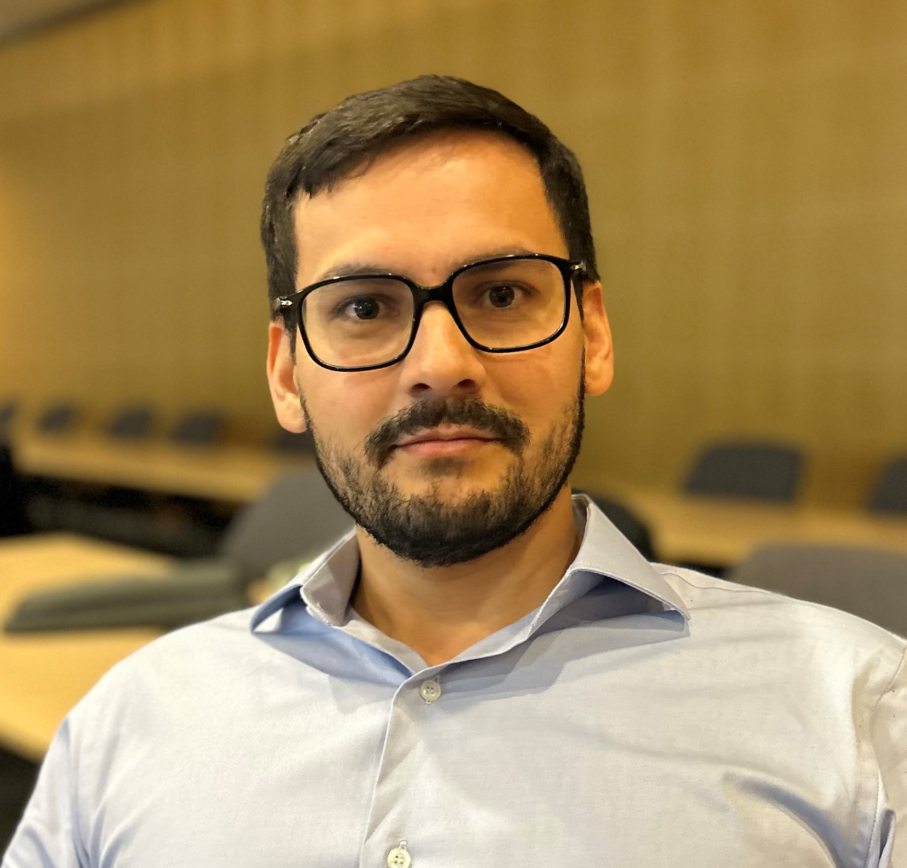

Sebastian Arango - Resume

Summary
As a finance, risk, and strategy professional with over seven years of experience, I thrive on leveraging data analysis and innovation to drive change. My journey in economics in the US and MBA studies in France has enriched my global perspective, enhancing my approach to tackling business challenges.
My Colombian-Brazilian heritage infuses a unique cultural insight into my work, fostering a diverse and inclusive approach to problem-solving. I’m passionate about digital transformation and committed to continuous process improvement, always seeking ways to enhance efficiency and effectiveness.
With a strong foundation in project and risk management, I excel in navigating complex environments, steering projects to successful outcomes. I am dedicated to developing my leadership and entrepreneurial skills, aiming to make a significant impact in the global business landscape.
Eduaction
Master of Business Administration, INSEAD
Bachelor of Arts in Economics, University of Colorado Boulder

Work Experience
Personl Information -
CV Overview -
- Allianz Consulting - Munich, Germany
- At Allianz Consulting, I led a team to improve the client’s non-IT incident management processes by automating critical tasks. This enhanced crisis escalation, security monitoring, and overall operational efficiency.
- Itaú Unibanco S.A. - São Paulo, Brazil
- At Itaú Unibanco, I addressed key operational challenges in the wholesale credit card process, improving efficiency and team performance. During my Summer MBA, I implemented new OKRs that streamlined decision-making and improved process timelines.
- Oi S.A. - Rio de Janeiro, Brazil
- At Oi S.A., I managed legal guarantees and implemented process improvements that enhanced operational efficiency and team productivity. I also led savings initiatives, optimized interest calculations, and promoted cross-functional collaboration to drive results.
- EY - Rio de Janeiro, Brazil
- At EY, I led reconciliation and monitoring initiatives to improve accounting accuracy and reporting efficiency. I conducted audits across various industries and provided recommendations to help clients mitigate risks and improve operational quality.
Thank you for visiting my webpage.